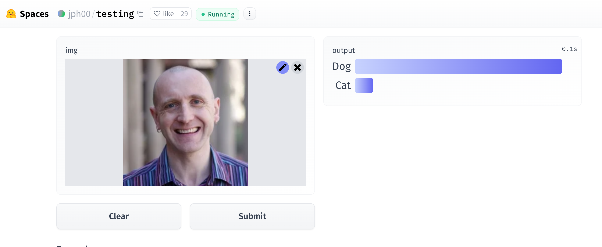

Talking with AI
The transformative nature and challenges of AI-generated communication
Matthew Brook O'Donnell, Ph.D.
Annenberg School for Communication, UPenn
mbod@asc.upenn.edu
About me…


- Lecturer in Communication focusing on data science and AI
- Background in computational linguistics
- A dog person!
About me
About you…

- Employed by NEA state/local affiliates
- Focus on internal/external communications
- Are you a cat or a dog person?
About you
- Create an image that represents the following people:
The members of State Education Association Communicators (SEAComm) are employed by state affiliates of the National Education Association (NEA) with primary assignments in internal and/or external communication. Membership also includes communications staff of local affiliates of NEA, staff of state or local affiliates whose duties include internal/external communication, and staff who work in communications at NEA.
About you
- GPT4o
About you
- meta.ai

About you
- Create 2 bullet points of 5-7 words each summarizing the following members:
The members of State Education Association Communicators (SEAComm) are employed by state affiliates of the National Education Association (NEA) with primary assignments in internal and/or external communication. Membership also includes...
- Employed by NEA state/local affiliates
- Focus on internal/external communications
About you and me
- Lifetime posessors experts in HCI
- H uman
- C ommunicative
- I ntelligence
- Human GPTs!
- G enerative
- P retrained
- T ransformer
- That is to say we are REALLY REALLY GOOD at communication!
Once upon a time there was a…
Today's talk is brought to you by the letter G…
On your mark, get…
Two countries separated by a common language
- On your mark, get set, go! (USA)
- On your marks, get set, go! (UK)
Dearly beloved we are…
The concept dates back at least to…
Eggs, milk,…
Recognizing words in context and their associations
- A large part of our COMMUNICATIVE INTELLIGENCE
- We learn these patterns over time as we are exposed to language across contexts
- And we reproduce and extend them when we come to communicate
Quick Overview: What is a GPT?
- G enerative
- P retrained
- T ransformer
Quick Overview: What is a GPT?
- Why is it important to understand something about how they work?

- We drive cars and most of us have little to no understanding of how they work
- And we don't need to in order to drive
Quick Overview: What is a GPT?
- BUT… no one is claiming that cars are SENTIENT, INTELLIGENT, SELF-DETERMINING, and a threat to human existence etc.
- If they did, having an understanding of the mechanics of a car would allow you to refute or strongly question these claims
Quick Overview: What is a GPT?
- A MACHINE LEARNING model
- Specifically using deep learning (DL) version of a NEURAL NETWORK
- In the past few years has become THE predominate kind of DL model and taken over the field of Artificial Intelligence (AI)
Machine Learning
- Using (large) amount of data to solve problems instead of using human constructed rules and procedures (traditional programming)
- Find FEATURES in image that are most helpful in distinguishing
- between cat and dog
- or a Bulldog and a German Shepherd
Machine Learning
For example, What kind of dog is Rufus?

Neural Network
- A general purpose ML model with interconnected nodes/neurons arranged in layers that process input signals and pass them on to other nodes/neurons
- A deep neural network has multiple layers (or stages) between the INPUT and OUTPUT
- Through repeated exposure to data different features captured across layers
- Best features are discovered
Neural Network

Cat or dog?
- Try a cat/dog classifier
- https://huggingface.co/spaces/jph00/testing

Cat or dog?
Cat or dog?

Cat or dog?

Cat or dog?
Cat or dog?

What kind of dog (or cat)?
- Try a pet breed classifier
- https://huggingface.co/spaces/jph00/pets
What kind of dog (or cat)?

What kind of dog (or cat)?

What kind of dog (or cat)?

What kind of dog (or cat)?
What kind of dog (or cat)?

What kind of dog (or cat)?
What kind of dog (or cat)?

Neural Network
- Parameters

GPT: Generative
- Next word prediction
- Can produce NEW text it has never seen
- High level of fidelity to human communication
- Arguably passes the Turing Test
GPT: Pretrained
- Neural network exposed to TRILLIONS of words
- The whole internet, archives of books, documents, images, etc etc.
GPT: Transformer
- ATTENTION
- Focuses on words and patterns in context that are the most relevant to understanding
- Combinations (associations) of:
- words
- grammar
- genre
- emotion
- reference
- etc.
Attention

Attention